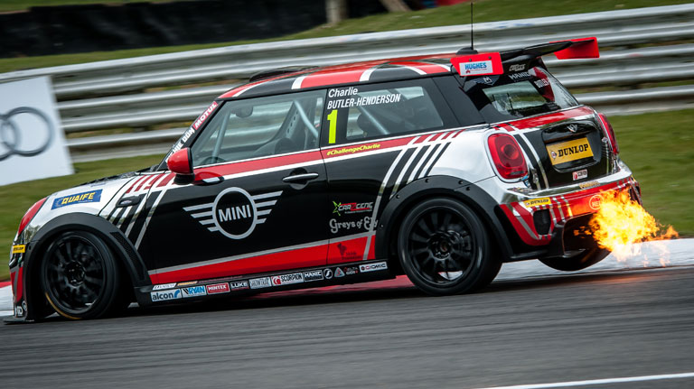

We cut our Teeth in the '80's and 90's on German hot hatches, ostly modifying and looking after MK2 Golf's in their various guises. After the launch on the mini R53 caught our eye we also started to modify and maintain them in there many guises, from the Cooper S down to the Mini One. With the launch on the R56 Mini we saw a that people wanted tuning and servicing solutions for the fickle 1.6 Turbocharged lump that was in the Cooper s and the Cooper Works, so we decided to specialise in that. For around 8 years we have been tuning and maintining al variarition of th R56 Mini but specialising in the Turbo charged hot versions. We have a passion for these cars, and you ca rest assured when you bring your car to us we will treat it as if it's our own!
